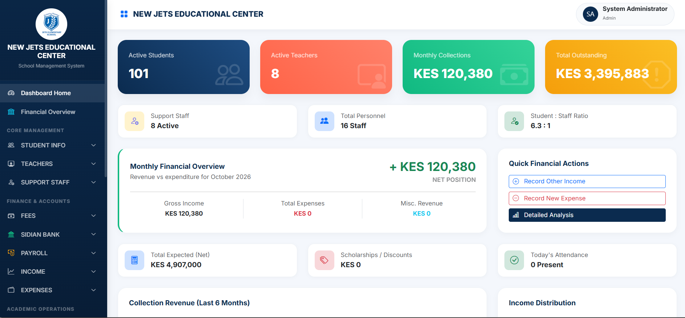

Management System

Flagship project
School Management System
An integrated platform that digitises school administration, from admissions and class lists to fees, exams, payroll and reports, with each staff member seeing only what their role needs.
- Student management
- Teacher & staff records
- Classes & timetables
- Academic records & exams
- Attendance
- Fees & financial records
- Payroll
- Reports & dashboard
- Role based login